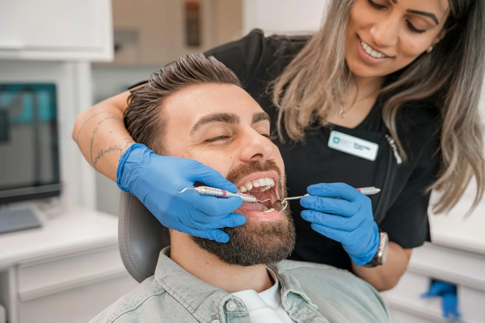
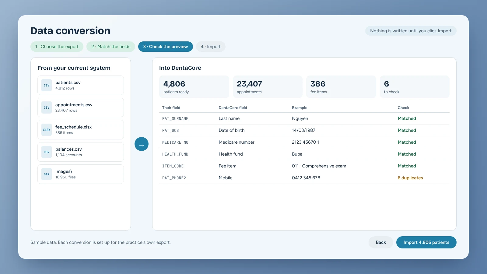
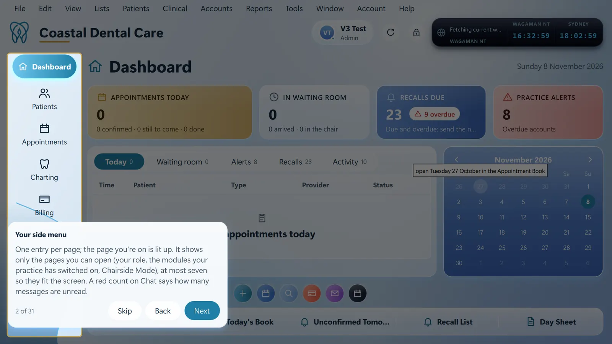

01 / 08 · Pilot program
Five practices. No licence fee.
The pilot program
DentaCore is new and ready for its first practices. We're choosing five orthodontic and dental practices to run it from day one, and we'll do the work of getting it into your practice with you.
- No licence fee. The DentaCore software is free for every pilot practice.
- You pay for installation: our time to set it up, convert your data and train your team.
- One monthly maintenance fee covers every update and all support from then on.
- A direct line to the developer. You talk to the person who builds DentaCore, and your feedback shapes what comes next.
- Orthodontic practices get the full system with Ceph as standard. General practices get Dental, with or without Ceph.
greg.middleton@eyceline.com

02 / 08 · Pilot program
We start by seeing how your practice runs
Step 1 · Discovery
Before anything is installed, we spend time in your practice and see how the day actually works.
- We sit with each role: reception, clinicians, assistants and the practice manager.
- We list what you have today: your current practice system, x-ray sensors, cameras, scanners and other imaging devices, and your computers and network.
- We agree a go-live date that suits your books and your patients, usually a quieter week.
- You get a written plan in plain words: what will be set up, what data comes across, who gets trained, and when.

03 / 08 · Pilot program
Installed in your practice, on your own server
Step 2 · Installation
DentaCore runs on your own computers, with one shared database that every chair sees live. We set the whole thing up for you.
- The database server set up on your own hardware, or we'll advise on what to get.
- Every workstation: reception, surgeries and the office, each signed in with personal logins.
- Imaging devices connected, so x-rays and photos land in the right patient's record.
- Encrypted backups scheduled and tested before you go live.
- Several locations? Each site joins over a VPN with its own rooms and floor plan, on one patient list.

04 / 08 · Pilot program
Your data comes across, checked before you switch
Step 3 · Data conversion
We move your records from your current system into DentaCore, and you check them before anything changes for your patients.
- What comes across: patients and families, contacts and referrers, appointments and recalls, accounts and balances, contracts and payment plans, notes and images.
- A trial conversion first. We convert a copy, then go through a sample of records side by side with your team.
- We fix anything that doesn't match and run the trial again until you're happy.
- The final conversion happens after close of business before go-live, so you finish on the old system and start the next morning on DentaCore.
- Conversions for some mainstream practice systems are ready now, and we'll build one for yours if it isn't.

05 / 08 · Pilot program
Training for every person in the practice
Step 4 · Training
Each person learns the screens they'll use, in your own practice, with your own patients already in the system.
- Reception: the Appointment Book, check-in, billing, claims and recalls.
- Orthodontists and dentists: charting, case cards, notes, imaging and Ceph.
- Assistants and nurses: chair flow, image capture and room prep.
- Practice managers and owners: reports, stock, rosters, users and backups.
- A sample practice to practise on, plus an illustrated guide for each role, a guided tour and F1 help on every window.

06 / 08 · Pilot program
We're with you on go-live day
Step 5 · Go-live
The first days on a new system matter most, so we're there for them.
- On site for the first day, checking the first appointments, payments, claims and the end of the day.
- Daily check-ins through the first weeks, so small questions get answered quickly.
- Fast fixes. Anything that gets in your way is fixed as a priority for pilot practices.
- Your old system stays available to look things up while your team settles in.

07 / 08 · Pilot program
Updates and support, in one monthly fee
Step 6 · Ongoing
Once you're running, the monthly maintenance fee covers keeping DentaCore up to date and helping your team.
- Every update, including new features as they're released.
- Support by phone, email and remote session when your team needs a hand.
- Backup checks, so you know your data is safe.
- Your requests heard first. Pilot practices help decide what's built next.

08 / 08 · Pilot program
Put your hand up for one of five places
Apply
Five places are open, for orthodontic and general dental practices. Email or call, tell us about your practice, and we'll take it from there.
- 1. Get in touch. Tell us your practice, how many chairs and sites, and what system you use now.
- 2. See it running. We walk your team through DentaCore with a sample practice.
- 3. Plan it together. If it's a fit, we visit, write the plan and book your go-live.
- You deal directly with the developer at Eyceline Services, from the first email to ongoing support.
greg.middleton@eyceline.com